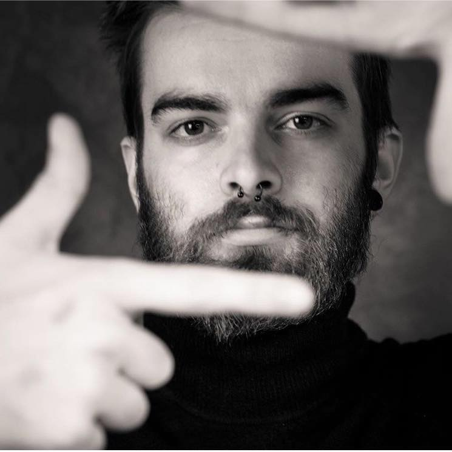
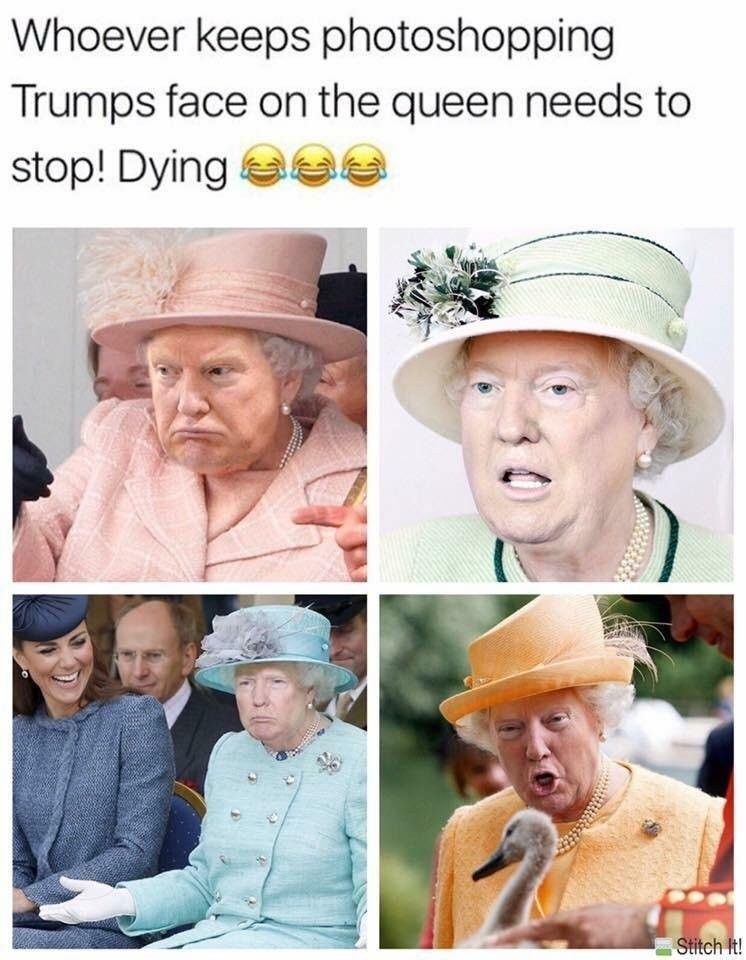

Lowie vdb

Acht oktober 1997
Huidige job: Crimi clown
Vorige jobs:
-
Astronaut
-
Speech schrijver voor Donald Trump
-
Bierproever
-
hoogleraar aan hogwarts
-
Professioneel tattoo artiest
Hobbys:
- Skateboarden
- Snowboarden
- Muziek luisteren

Raid-report
instagram
Favoriete quote:
-
When the power of love overcomes the love of power this world shall know peace
catagorie 1: ontbijt(nooit voor 9u)
-
cornflakes
-
boterham met tonijn
-
vruchten thee(2x-3x per dag)
Catagorie 2: Eten
-
Lasagne
-
Pizza
-
Spaghetti
-
Vegetarische lasagne
Catagorie 3: Muziek
- Rock
-
Rap
-
Drum & bass
-
Hardstyle
-
Goa
-
Tekno